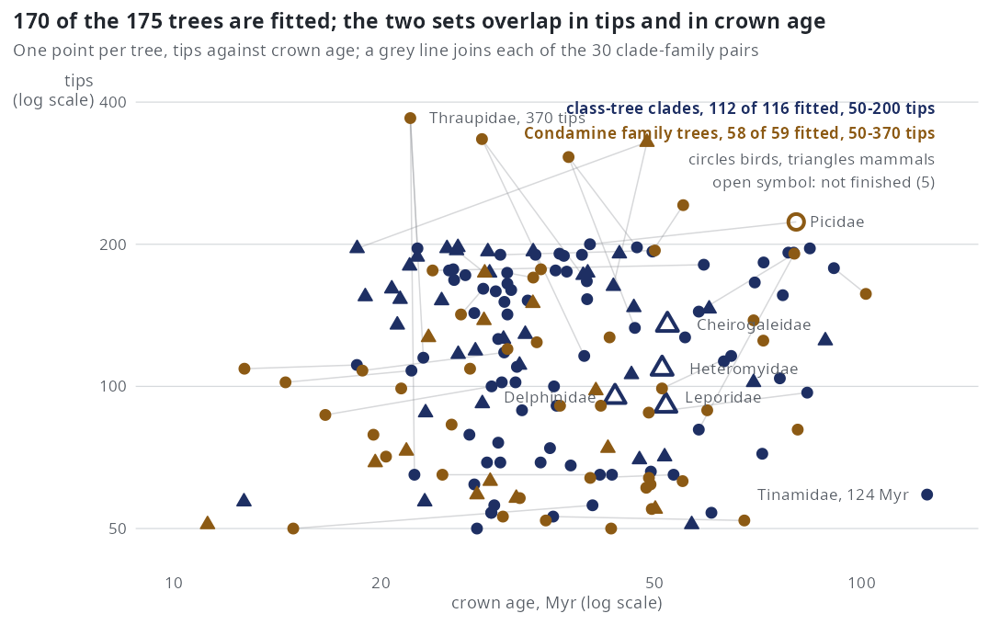
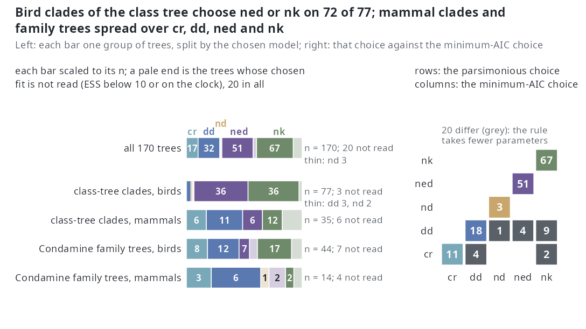
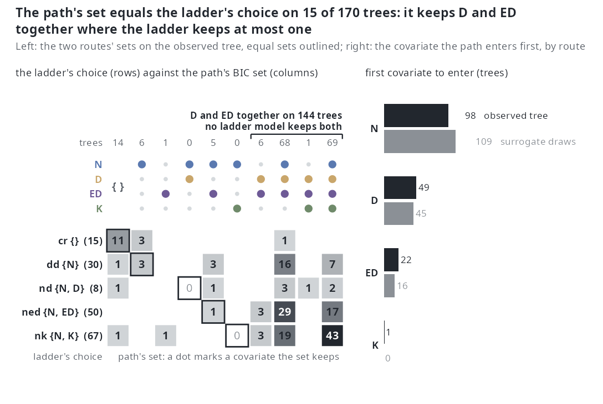
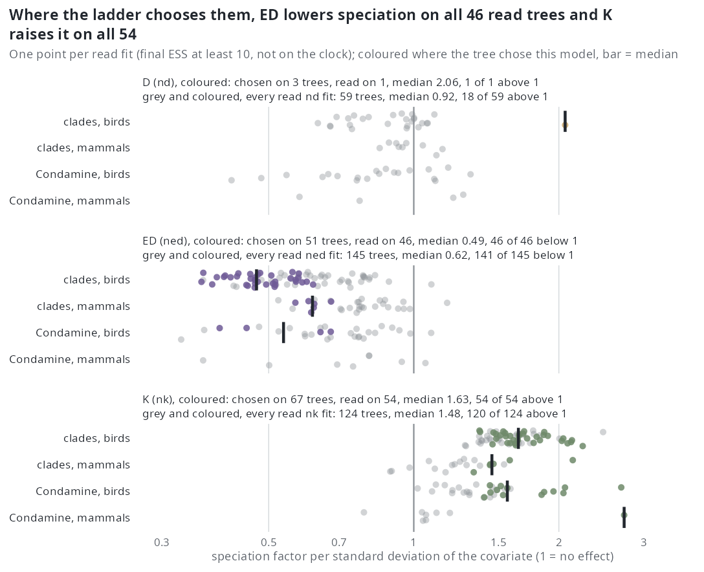
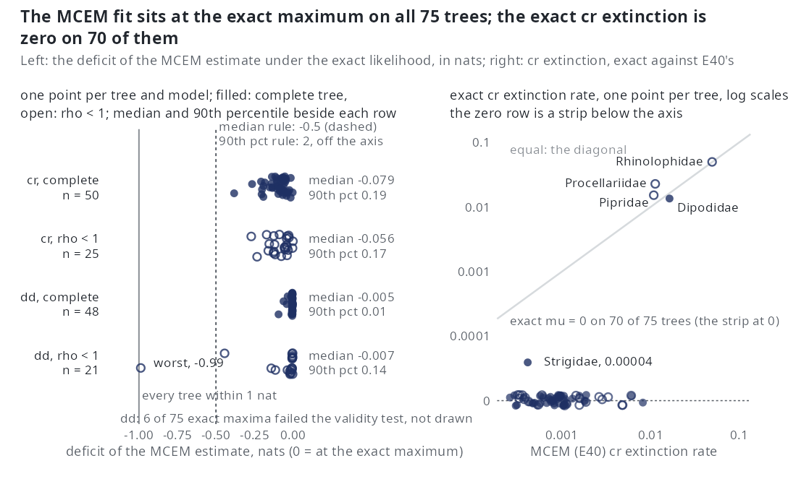
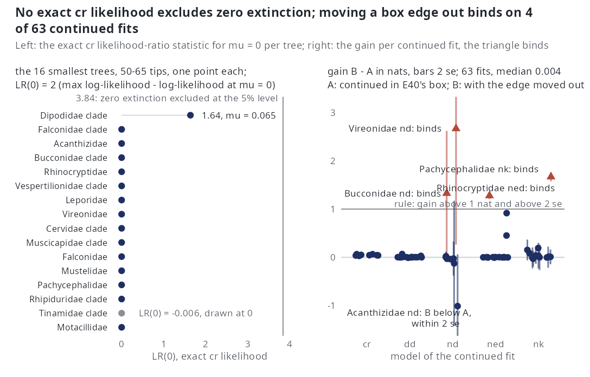
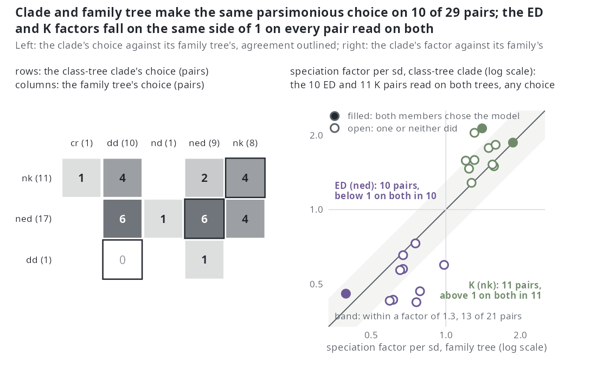
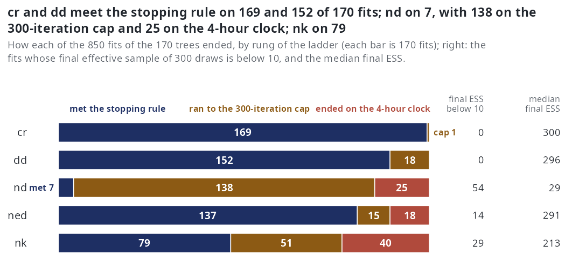

Real phylogenies - what the workflow returns on 170 bird and mammal trees
E40 closed on 2026-10-18 at 170 of 175 trees: the five remaining fits had run 42 hours past their clocks and were stopped by hand (E40). Under the pre-set pairs rule, read on the 29 complete pairs, the class-tree clades and their family trees agree on the chosen model on 10 of 29, below the 70% required, so the figures below show the class-tree clades but the across-tree statements of this page rest on the Condamine family trees and on what the two sets share.
The trees are those of E40: the bird and mammal class trees of the atlas (McTavish et al. 2025, 10,824 tips; Upham et al. 2019, 5,912 tips) cut from the root into disjoint clades of 50 to 200 tips (116 clades, \(\rho = 1\)), and the Condamine et al. (2019) family trees of 50 to 400 tips whose sampling fraction against the class tree lies between 0.5 and 1.10 (59 trees, \(\rho\) taken as \(\min(\rho, 1)\)); 30 clades stand for a family that also has a Condamine tree, and make the pairs. Every tree was fitted with the one-call ladder cr → dd → {nd, ned, nk} (exponential link, auto_bounds() box, 300 draws, 300 iterations, a 4-hour clock per fit, emphasis f30a791), unconditioned on survival, and the model was chosen by the parsimony rule: fewest parameters within 2 AIC of the minimum. When E40 closed on 2026-10-18, 170 of the 175 trees were finished (77 of 77 bird clades, 35 of 39 mammal clades, 44 of 45 bird family trees, 14 of 14 mammal family trees; stopped by hand with no fit written: mamm-020-Cheirogaleidae, mamm-028-Heteromyidae, mamm-031-Delphinidae, mamm-033-Leporidae, Picidae), 850 fits in all, none failed. The exact checks come from E42 (the exact cr and dd maximum on the 75 trees finished by 2026-10-15) and E41 (the exact cr profile for zero extinction and the continuation of E40's capped and edge fits on the 16 smallest trees, all 135 pilot jobs written; closed at the pilot). The tables behind every figure were regenerated from the fits by sim/E40-report.R over the 170 trees (results/E40/report/); the figures are drawn by wiki-figs/real/figs.R (routes.R for the ladder-against-path figure, from results/E40/fits.csv and paths.csv).
The trees

The class-tree clades fill the 50-200 band by construction and the family trees run to 370 tips (Thraupidae). Crown ages run from 11.2 to 124.5 Myr, and 45 of the 170 finished trees have \(\rho < 1\) (lowest 0.63), all of them family trees. A pair's two members are different trees of the same family — different tip sets, placements and dating — which is what the pairs test is about; the lines show they can differ by a factor of 2 or more in tips and in crown age. The five unfinished trees are four mammal clades of 91 to 135 tips and the 223-tip Picidae family tree.
Model choice

The table is the choice with the nd rung refitted under the corrected D likelihood (E48); the figure above was drawn from the earlier nd fits, and the stored count is in brackets where it differs.
| set | cr |
dd |
nd |
ned |
nk |
differs from min AIC | trees |
|---|---|---|---|---|---|---|---|
| class-tree clades, birds | 0 | 3 | 2 | 36 | 36 | 3 | 77 |
| class-tree clades, mammals | 6 | 11 | 0 | 6 | 12 | 5 | 35 |
| Condamine family trees, birds | 6 (8) | 10 (12) | 5 (0) | 6 (7) | 17 | 5 (7) | 44 |
| Condamine family trees, mammals | 3 | 6 | 1 | 2 | 2 | 4 (5) | 14 |
| all | 15 (17) | 30 (32) | 8 (3) | 50 (51) | 67 | 17 (20) | 170 |
A lineage-level model is the parsimonious choice on 125 of 170 trees: nk on 67, ned on 50, nd on 8 (121 with the earlier nd fits: ned 51, nd 3). The refit moved the choice on 7 trees, all Condamine family trees: to nd on Acanthizidae and Ardeidae (from cr), Dasyuridae, Meliphagidae and Procellariidae (from dd) and Sturnidae (from ned), and from nd to dd on Ctenomyidae. The bird clades of the class tree almost never stop at cr or dd (3 of 77); the mammal clades and the family trees do on 17 of 35 and 25 of 58. The minimum-AIC rule gives nk 77, ned 51, dd 23, nd 10, cr 9, and differs from the parsimonious choice on 17 trees, 9 of them nk by AIC and dd by parsimony. On 21 trees the chosen fit is not read: 15 have a final effective sample below 10 (10 of them nk, 3 nd, 2 ned) and 14 ended on the 4-hour clock (8 are both). E39 found ED and K ranking the lineages of a real tree in partly the same order, so an nk choice and a ned choice are not two mechanisms (the fifth figure).
The ladder against the path

{ } is the empty set, the number above a column is its trees); the outlined cell of each row is where the two sets are equal, and the bracket counts the four columns that keep D and ED together. Right: the covariate that enters the path first, on the observed tree (dark) and on the 3000 surrogate draws at the dd estimate (light; the path is fitted on the 150 draws of largest weight). No tree is excluded: no draws path is sampler-limited (lowest ESS 92 of 3000, Rhinolophidae; median 2962), and the 9 trees whose set paths.csv writes as NA are empty sets (all four path rows of the tree are empty and their coefficients zero).The path and the ladder keep the same set on 16 of 170 trees on the observed tree (9%: 12 of the 17 cr trees, 3 of 32 dd, 1 of 51 ned, none of the 3 nd or the 67 nk) and on 17 of 170 on the draws (13 cr, 3 dd, 1 ned). The difference is size: the path's BIC set has a median of 3 covariates (0 on 14 trees, 1 on 7, 2 on 11, 3 on 69, 4 on 69) where the ladder's choice has at most 2, and on the observed tree the path's set contains the ladder's on 125 trees, is contained in it on 2 and is neither on 27. The pendant-edge pair is not swapped but kept whole: the path keeps D and ED together on 144 trees (130 on the draws), D without ED on none (2 on the draws) and ED without D on 6 (9); where the ladder chose ned the path keeps D beside ED on 50 of 51, where it chose nd it keeps ED beside D on 3 of 3, and it keeps K on 43 of the 67 nk trees and on 70 trees in all. N enters first on 98 trees on the observed tree and 109 on the draws, D on 49 and 45, ED on 22 and 16, K on 1 (mamm-024-Tenrecidae) and 0; the commonest full orders are N > ED > D > K (68 trees) and D > ED > N > K (30). The two routes give the same set on 146 of 170 trees and the same first covariate on 156, and the agreement with the ladder is 8 of 112 class-tree clades and 8 of 58 family trees. On the extinction rate the observed-tree path keeps nothing on all 170 trees (no extinction event is observed) and the draws path keeps N on 60 and N and D on 7.
Coefficients

Where the ladder chooses them, the coefficients have one sign each: the ED factor is below 1 on all 46 read trees that chose ned (median 0.49 per sd), the K factor above 1 on all 54 that chose nk (median 1.63). Over every read fit of the model, chosen or not, the picture is the same with the medians nearer 1: ED 0.62 on 145 trees (4 above 1), K 1.48 on 124 trees (120 above 1). D is different in the figure, which shows the earlier nd fits: there nd is chosen on 3 trees and read on 1 (factor 2.06), and across the 59 read nd fits the factor is 0.92 with 18 of 59 above 1, so D had no sign. With the nd rung refitted under the corrected D likelihood (E48), 113 of the 170 nd fits are read (54 with ESS below 10, 3 more on the clock); over the 109 whose \(\beta_D\) is off its box edge the factor is 0.78 (0.37 to 1.72) and below 1 on 92, and where nd is chosen and read off the edge it is 0.48, 0.52, 0.72 and 1.72. The exclusions are smaller for ned (25) and nk (46). Thirty-four of the 328 read speciation coefficients end on a box edge themselves (31 of them \(\beta_{ED}\), so those ED factors are the box's lower bound, not the tree's); the extinction factors are not read here at all, because 265 of the 328 read fits hold their extinction intercept or slope on an edge (see the seventh figure for what the edges mean). On the 16-tree interim report the medians over read fits were ED 0.76 and K 1.63; with the trees from 65 to 370 tips added they are 0.62 and 1.48.
The covariates on real trees

nk fit against the tree's Colless imbalance (Yule = 0), the 124 fits read (final ESS at least 10, not ended on the clock; 46 of 170 not read); filled points chose nk, open ones another model. In both panels blue is a class-tree clade and ochre a Condamine family tree.Over the tips of a tree at the present, ED and K are negatively correlated on all 170 trees, median -0.79 (range -0.97 to -0.23). E39 pooled the lineages alive at 0.5, 0.75 and 1 of the crown age, which gives -0.38 on the same 170 trees and -0.44 on its own 47 families (the 42 trees in both sets give -0.45 under either file); the two numbers measure different things, and the fits read the covariates at every event time, not only at the present. The fitted K factor rises with imbalance: rank correlation 0.53 over the 124 read nk fits (0.38 over the 54 that chose nk), and the ED factor falls with it (-0.57 over 145 read ned fits); the median Colless is 1.63 (-1.33 to 7.29) against 1.43 on E39's families. So the K effect tracks the shape of the tree: the more unbalanced it is, the larger the K factor, and the more negative the ED-K correlation (rank correlation of imbalance with the ED-K correlation -0.35 under E39's definition on the 170 trees, -0.18 over the tips; -0.51 on E39's 47 families). Whether that is a speciation signal or a property of the covariate on such trees is what E39 left open; the simulated generators of E21 and E27 do not produce trees this unbalanced.
MCEM against the exact estimate

dd maxima failed the validity test and are not drawn; the worst deficit, -0.99, is labelled. Right: cr only, one point per tree, the extinction rate at the exact maximum against E40's, log scales; the 70 trees whose exact rate is zero are drawn as a strip on the 0 row below the axis, the five others are named.On the 75 trees of E42 the Monte Carlo EM estimate sits at the exact maximum. The median deficit is -0.079 nats under cr on the 50 complete trees (90th percentile 0.19, worst -0.38) and -0.0045 under dd on 48 (0.011, -0.093); on the trees with \(\rho < 1\), where emphasis samples each species independently and DDD fixes the number missing, -0.056 (25 trees) and -0.0069 (21 trees, worst -0.99). Six dd maxima failed the validity test (unstable when the truncation grows) and are not drawn. E1's rule for reaching the exact maximum (median deficit at least -0.5 nats, 90th percentile of the absolute deficit at most 2) is met on every row. The exact cr maximum has zero extinction on 70 of 75 trees (the exceptions: Rhinolophidae 0.050, Procellariidae 0.023, Pipridae 0.015, Dipodidae 0.014 and bird-055-Strigidae at \(3.9 \cdot 10^{-5}\)), where E40's estimate is small but positive, 0.0003 to 0.05 (median 0.0009), and the speciation rates agree to a median ratio of 1.004. Dipodidae's exact \(\hat\mu\) is 0.014 here and 0.065 in E41's profile: E42 maximises the unconditioned likelihood E40 uses and E41 the crown-conditioned one. Under dd the exact extinction intercept is a median -10.0 against E40's -7.0 and the extinction slope on \(N\) sits on its \(-3/n\) cap on 61 of 69 valid trees: the likelihood is flat toward zero extinction and the box sets the number.
Extinction on real trees

nd (2.67, se 1.20), Pachycephalidae nk (1.67, se 0.05), Bucconidae nd (1.33, se 0.65), Rhinocryptidae ned (1.28, se 0.04).On the 16 smallest trees (50-65 tips) no exact constant-rate likelihood excludes zero extinction: LR(0) is below \(10^{-6}\) on 14, 1.64 on Dipodidae (\(\hat\mu = 0.065\), \(\hat\lambda = 0.130\)) and -0.006 on Tinamidae (an optimiser shortfall, drawn at 0). All 135 continuation jobs of the pilot are written (72 arm A, 63 arm B). Moving the edge out gains a median 0.004 nats (quartiles 0.001 and 0.039; range -1.01 to 2.67); the edge binds on 4 of 63 (6%), three of them pairs in which an arm did not converge, against the 20% of E41's rule 2, so the box stays and a parameter on an edge is read as not bounded by the tree in that direction. Arm B ends on its moved edge on 37 of 63: every extinction slope on an edge (\(\gamma_N\) 47, \(\gamma_{ED}\) 16, \(\gamma_K\) 11) runs to the new edge, three times as far from zero, for no gain. The -1.01 is Acanthizidae nd, whose arm B ended below arm A, within two standard errors of zero (standard error 0.54). Arm A meets the stopping rule within 1000 iterations on 34 of 72 jobs (dd 16 of 16, ned 12 of 16, cr 6 of 8, nd 0 of 16, nk 0 of 16), and re-ranking each tree with the continued fits changes the parsimonious choice on 0 of 16 (rule 1: 10%): E40's choices on these trees stand. E41 is closed at the pilot; the 154 trees beyond it are not run.
The pairs

cr and nd for the clades, nd for the family trees) are left out, the outlined diagonal counts agreement and the margins give each side's totals. Right: the ned fit's ED factor and the nk fit's K factor, clade against family, log scales, on the pairs where the model's fit is read on both members whatever either member chose (10 ED pairs, 11 K pairs; the other pairs have a fit that is sampler- or clock-limited on one member); the diagonal is equality and the shaded band a factor of 1.3 either way; a point filled in the covariate's colour is a pair whose two members both chose the model, open one or neither. The rule was evaluated on 2026-10-18 on these 29 pairs; Picidae's pair is the one E40 did not finish.Twenty-nine of the 30 pairs have both members finished (Picidae is the one missing). The clade and the family tree make the same parsimonious choice on 10 of 29 (34%): the clades choose ned 17 times and nk 11, the family trees spread over dd 11, ned 9, nk 8 and cr 1, and the commonest disagreement is a clade choosing ned where its family tree stops at dd (7 pairs). Where both chosen fits are read (18 pairs) the agreement is 3. The coefficients agree better than the choices: on the pairs where both ned fits are read the ED factor is below 1 on both members on 10 of 10, and on the pairs where both nk fits are read the K factor is above 1 on 11 of 11, and the clade's factor is near the family's: the clade-to-family ratio is within 1.3 either way on 5 of the 10 ED pairs and 8 of the 11 K pairs (median ratio 0.79 and 1.18; rank correlation 0.37 and 0.35). The sign agreement is the rule's second condition and the choice agreement its first; at 34% the first is below the 70% registered, so set (a)'s across-tree statements are reported and not read (E40, evaluated on 2026-10-18 on the 29 pairs E40 finished). Reread with the refitted nd rung (E48), one family tree changes its choice (Meliphagidae, from dd to nd, its clade staying at ned); the choice agrees on 10 of 29 and on 3 of the 18 pairs where both chosen fits are read (17%), and the sign on 29 of 30 read coefficients, D now included (8 of 9), so the rule fails on the choice as before.
Convergence

cr meets the stopping rule on 169 of 170 fits and dd on 152 (18 on the cap); neither ever reaches the clock. nd meets it on 3, runs to the 300-iteration cap on 81 and to the 4-hour clock on 86, and ends with a final ESS below 10 on 93 of 170 (median 7 of 300 draws): under the earlier D likelihood the pendant-age model was sampler-limited more often than not. Refitted under the current one (E48, same budget and clock), nd meets the rule on 7, runs to the cap on 138 and to the clock on 25, and ends below 10 effective draws on 54 (median 29). ned meets the rule on 137 (15 capped, 18 clocked; 14 with ESS below 10) and nk on 79 (51 capped, 40 clocked; 29 below 10). The clock is a size effect: the 144 clocked fits sit on 90 trees of a median 174 tips against 106 for the rest, and the ladder took a median 7.0 h per tree, 16.6 h at most (Soricidae, 329 tips). The interim report's 16 small trees had no clocked fit; the budget that E40 set from E28's slope was not enough for the lineage-level rungs on the larger trees.
How to read these
- Parsimonious choice.
compare_models()takes the model with the fewest parameters among those within 2 AIC of the minimum (cr2,dd4, the lineage-level models 6). It is the choice of record; the minimum-AIC choice is shown beside it as a sensitivity reading. The parsimonious rule comes first because it was registered before the data, and MCEM log-likelihoods carry Monte Carlo error and a downward bias, so AIC differences below 2 are within the estimator's noise. - Sampler-limited. A fit whose final effective sample (the ESS of the last E-step, of 300 draws) is below 10 is reported and not read; this is the per-fit form of the cell-level convention (median ESS below 10) used on the simulation pages. 14 chosen fits and 136 of the 850 fits in all are sampler-limited.
- Clock-limited. A fit that ended on its 4-hour clock is reported and not read; 144 of 850 fits, 15 of them the chosen fit of their tree, none under
crordd. The simulation pages mark a cell clock-limited when more than 10% of its fits ended on the clock; by that conventionnd(51%),nk(24%) andned(11%) are clock-limited on these trees. - Read coefficient. A speciation factor is read only from a fit that is neither sampler-limited nor clock-limited; the extinction side is not read at all here, because 265 of the 328 read fits hold an extinction intercept or slope on a box edge, and E41 and E42 say the likelihood is flat toward zero extinction there.
- Unconditioned. Every fit on this page maximises the likelihood unconditioned on the clade's survival (
cond = 0), as E40 registered it. The conditioned fits are Phase 1 of the estimability plan; E43 found no adequate survival emulator for the lineage-level models, which are therefore conditioned by a direct Monte Carlo estimate of \(P(S)\), and E45, running since 2026-10-16, sets the conditionedcr/ddagainst the exact answer. - The
ndfits in the figures predate4e0b9dd. Until that commit the likelihood held the clade mean pendant age at its segment-end value, so \(D\) grew within a segment, while the simulator held it constant; E44 measured \(\beta_D\) returning at 0.70 and 1.46 of its value before the change and 0.95 and 1.16 after. E40'sndfits maximised the old likelihood; E48 refitted thendrung on the 170 trees under the current one, and the choice table, thendcounts and the D factors in the text above are E48's (125 lineage-level choices,nd8, D factor 0.78 over 109 read fits), while the figures still show the earlier fits. Thecr,dd,nedandnkfits are not touched. The same commit changedlineage_table()'s Poisson rows, which the path reads (\(D\) taken at its constant value on the segment instead of at the segment's midpoint), so the observed-tree paths of the ladder-against-path section were computed on the earlier rows; E47 takes in the path rerun (Estimability). - The pairs rule of E40 (same parsimonious choice on at least 70% of pairs, same sign of each read coefficient on at least 80%, fewer than 10 readable pairs not evaluable) was evaluated on 2026-10-18 on the 29 pairs with both members finished, Picidae's pair having been stopped by hand: the choice condition fails (10 of 29), so the class-tree clades' across-tree statements are reported and not read. Recomputed with E48's
ndfits it fails the same way (3 of 18 readable pairs). - The figures exclude what they say. Each caption or subtitle gives the number of trees or fits left out and why; a number on this page that differs from the interim tables of the E40 page does so because it covers 170 trees rather than 16.
Where the data are
results/E40/:candidates.csv(the 175 trees: set, class, tips, \(\rho\), crown age),pairs.csv(the 30 pairs),trees/(the newick files),fits/fit-<id>.rds(the full fit of each tree:ladder$fits[[model]]withpars,loglik,AIC,stop_reason,iterationsand the per-iterationdetails$mcemtrace;ladder$comparison;path_obs,path_aug),fits/jobs/<id>-fits.csvand-paths.csv(flattened), andreport/— the tables ofsim/E40-report.Rregenerated on 2026-10-18 over the 170 finished trees:trees.csv(per tree: choice, minimum-AIC choice, AIC of each rung, Colless, the sd of each covariate),fits.csv(per fit: stop reason, iterations, final ESS, log-likelihood),coefficients.csv(per fit and covariate: the factor per sd, read flag, edge flag),edges.csv,slot-check.csv.results/E40/paths.csv(680 rows, 4 per tree:which=observedoraugmented,rate, the path'sentry_order, itsbic_setandaic_set, the coefficients at the BIC minimum,n_events(weighted on the draws) and, on the draws only, theessof the 3000 weights; an empty set is written"", orNAon the 9 trees whose four rows are all empty) — the ladder-against-path figure.results/E42/exact.csv: per tree and model, the exact and the E40 estimate, the deficitdl,valid,on_box.results/E41/exact-cr.csv(per tree: exactcr\(\hat\lambda\), \(\hat\mu\), LR(0)) andresults/E41/jobs/<tree>__<model>__<arm>.csv(the continued fits).- The paper repository:
results/E39/per-tree.csvandshape.csv(the within-tree correlations and Colless of the 47 families),results/E26merged/families.csvandresults/E28/compare.csv(the 46-family analysis of record). - The figures and their scripts:
wiki-figs/real/(figs.R,routes.Rfor the ladder-against-path figure,out/,out/numbers.txtandout/routes-numbers.txtwith every number quoted here).
Related
- E40 — the run, its design and pre-set rule, and the 16-tree interim report.
- E41 — the continued fits and the exact extinction profile.
- E42 — the exact maximum under
cranddd. - E39 — what the covariates share on real trees.
- E26, E28 — the 46-family analysis of record (36 usable; by minimum AIC 21 with a lineage-level model,
nk12,ned9; parsimonious choice on E28's 25 usable:cr4,dd5,nd0,ned8,nk8), which the Condamine set here repeats at a larger budget. - Estimability — the conditioned fits that follow.